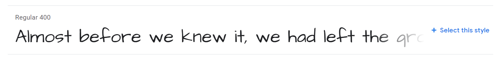

Customizing Mixtape
App starter kit
Now it's time to apply what you've learned to complete your app!
Fork the repl to get started.
Python code overview
Let's take a quick look at the .py files in the repl; most of it should look familiar, or similar to what we've seen before.
main.pyserves aflaskapp with a single page, and does some processing forPOSTrequestsauth.pyhas somewhere to put anaccess_tokenshould we want tomixtape.pycontainstracks_detail, which is imported intomain.pyand used byrender_template()tracks.pyhas functions to fetch data from the Spotify API, and to extract summary information from itvotes.pyhasreset_votes()andlog_user_choice()functions, which modify thereplitdatabase
Templates overview
- our
flaskapp will use theindex.htmltemplate to create our page - the header and footer can be modified within
base.html index.htmluses{% include ... }to incorporatetop_section.htmlandtracks_section.htmltop_sectionhas no Jinja templating logic, i.e. dynamic elements to ittracks_sectionhas Jinja statements for the voting buttons but not track information
Things to do
First of all, work in mixtape.py:
- use the
tracks.get_track_data()function with a validaccess_tokenand sometrack_ids of your choice to fetch data from Spotify (six is a good number of tracks) - write this data to the
replitdatabase so it can be retrieved in future without needing to request from the API again - use
tracks.track_summary()to extract data to display on the page, assigning it totracks_detail
Then, work in tracks_section.html:
- modify the template to display this data in the cards using Jinja statements
Finally, see if you can add some different styling to the app. We'll take a look at how to do this now.
Bootstrap styling
You'll notice in base.html that several stylesheets are imported, and that these can be found in the /static folder.
bootstrap.csswas generated using the bootstrap.build service, using the Sandstone theme- the
_variables.scssfile allows you to retainany customizations made with the tool
- the
- the Album example from the Bootstrap site was used as a basis for the page design and its CSS is in
album.css custom.cssincludes some further customizations, to fonts and the design of the cards
Google fonts
Take a look at custom.css; at the top you'll see several @import statements, and then references to the imported fonts in the font-family attributes of some of the CSS class declarations:
h1, h2 {
font-family: 'Rock Salt', cursive;
...
}

- we can get
@importstatements and associatedfont-familyvalues for numerous other fonts from Google Fonts
CSS variables
h1, h2 {
...
color: var(--dark);
}
- notice the use of a CSS variable to apply the
--darkcolor (defined in and inherited frombootstrap.css)